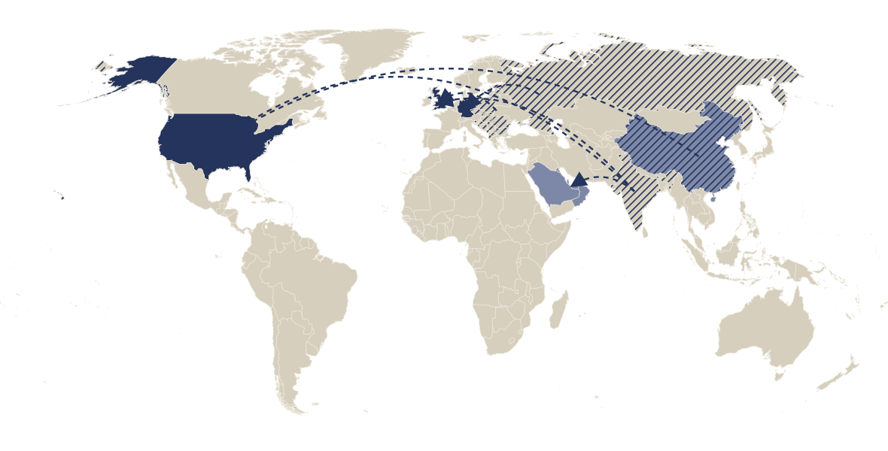

Высококвалифицированный специалист (ВКС) — работник, обладающий специальными знаниями, сложными навыками и высокой профессиональной подготовкой, необходимыми для выполнения сложной трудовой деятельности.
Развитие технологий изменяет требования к трудовым ресурсам. Вместо выполнения стандартных операций возрастает значение разработки, программирования и управления сложными системами.
Американская миграционная система использует несколько категорий для привлечения специалистов в зависимости от их квалификации, профессиональных достижений и целей пребывания.
Особенность модели США: сочетание удовлетворения спроса работодателей, привлечения выдающихся талантов и развития научно-технологического потенциала.
O-1 и H-1B не предоставляют грин-карту автоматически, тогда как EB-1A и EB-2 NIW относятся к иммиграционным механизмам.
EU Blue Card — инструмент привлечения квалифицированных специалистов из третьих стран. Основные требования: подтверждение квалификации, трудовой договор или предложение работы и установленный зарплатный порог.
Китай и Объединённые Арабские Эмираты используют различные подходы к привлечению международного человеческого капитала.
Ориентируется на научно-технологические приоритеты, привлечение иностранных исследователей и возвращение собственных специалистов из-за рубежа.
Используют долгосрочные резидентские программы, предпринимательские возможности и особенности налоговой системы.
Международные потоки специалистов распределены неравномерно: развитые экономики концентрируют научные и технологические кадры, а другие государства выступают крупными источниками человеческого капитала.

Иностранные специалисты формируют значительную часть научно-технической рабочей силы США и обеспечивают растущую долю занятости в ИКТ Германии.
Сколько врачей и медсестёр, родившихся в этих странах, работали в странах ОЭСР в 2020–2021 годах, человек
Вывод: международное привлечение специалистов может способствовать увеличению инновационной активности.
Вывод: миграция влияет на заработную плату, производительность и государственные финансы, но величина эффекта зависит от структуры миграции и условий принимающей экономики.
Итог: экономическая результативность высококвалифицированной миграции зависит не только от привлечения иностранных специалистов, но и от условий использования их знаний, опыта и профессионального потенциала.